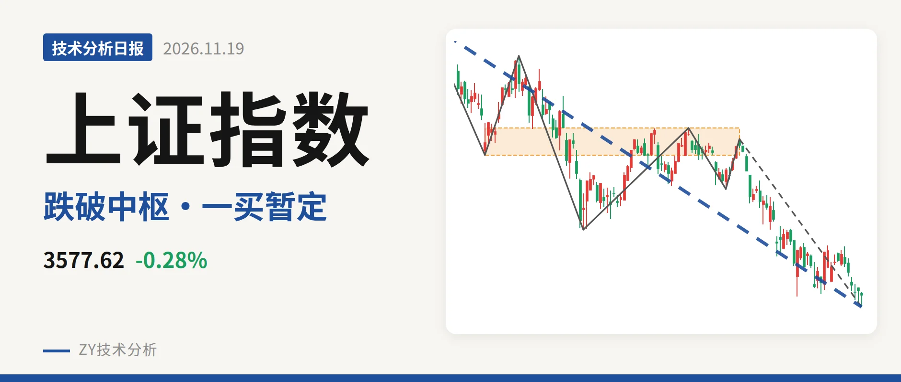
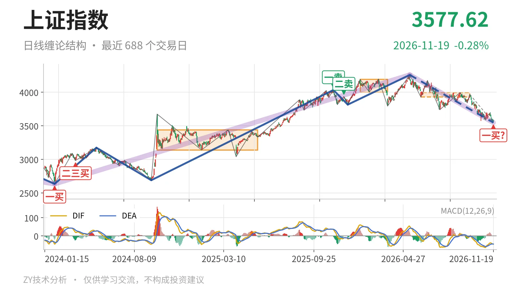
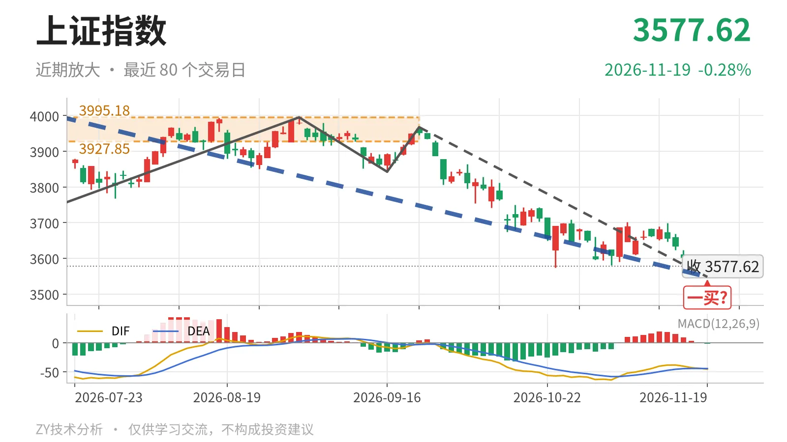

上证指数｜失守3928点，一买暂定3547.94

最近日线中枢 3927.85—3995.18点，收盘位于中枢之下
一句话：收盘低于最近中枢下沿8.9%，最后下跌笔未见背驰，一买暂定
📉 走势结构：日线下跌段没有结束
当前日线处在5月14日以来的下跌线段中，这段没有结束。该线段从4258.86点跌至3547.94点，跌幅约16.7%，内部已有7笔；之前2025年12月16日至2026年5月14日的上涨线段已经结束。更大级别看，2024年2月5日至2026年5月14日的上涨走势还没走完，当前下跌先视为其中的调整，但日线这一段还在延续。

🧭 中枢位置：跌破最近中枢，中枢下移
最新收盘3577.62点在最近日线笔中枢下方。最近中枢为6月8日至9月22日的3927.85—3995.18点，尚未完成；收盘低于下沿约8.9%。此前1月14日至3月23日的中枢在4002.78—4190.87点，最近中枢下沿更低，中枢是下移的。下方可参考2021年7月28日至2023年5月9日的线段中枢，区间3312.72—3418.95点，当前价仍在其上方。
🎯 买卖点：11月19日一买只是暂定
11月19日出现日线笔一买，价格为3547.94点。该买点所在的9月22日至11月19日下跌笔仍在延续，所以只能看作暂定的一买；若这一笔继续向下延伸，该买点会随新低改写。此前2025年11月14日一卖4034.08点与2025年12月8日二卖3936.31点之后，行情又创出4258.86点新高，这两个卖点只对应较小级别，不能作为当前日线下跌线段的起点。

📊 背驰：最后一笔未见新低不新弱
比较9月22日至11月19日下跌笔与6月23日至7月20日下跌笔。价格从前低3741.11点到新低3547.94点，DIF低点由-61.8降到-64.0；但绿柱面积由289扩大到446，下跌动能没有衰减，反而放大。最新DIF-45.5、DEA-44.5仍在零轴下，柱体-1.8。这说明最后一笔下杀未见新低不新弱，暂定一买缺乏同向背驰支持。
🔍 关键位置观察：反抽能不能回中枢
结构弱在价格低于中枢下沿8.9%，且当前下跌笔绿柱面积仍在放大。反抽若回不到3928点上方，结构上构成三卖；若重新回到3928—3995点中枢内，这次下破更接近中枢扩展而非趋势下跌。上方结构位看3995点附近，下方结构位看3419点附近。整体结构偏弱。
⚠️ 本文为基于公开行情数据的缠论技术结构记录，由程序自动计算并生成，仅供学习交流，不构成任何投资建议。市场有风险，投资需谨慎。